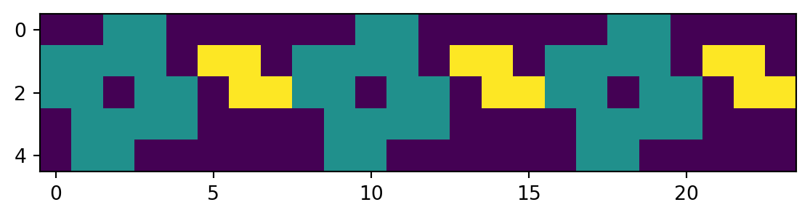
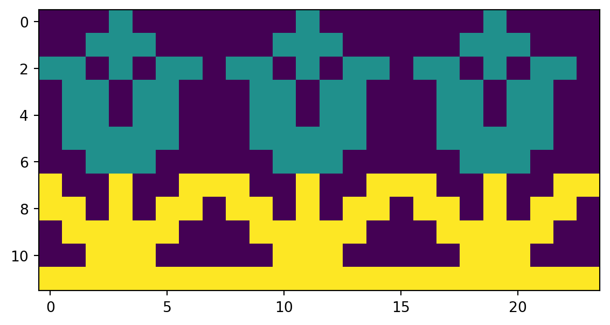
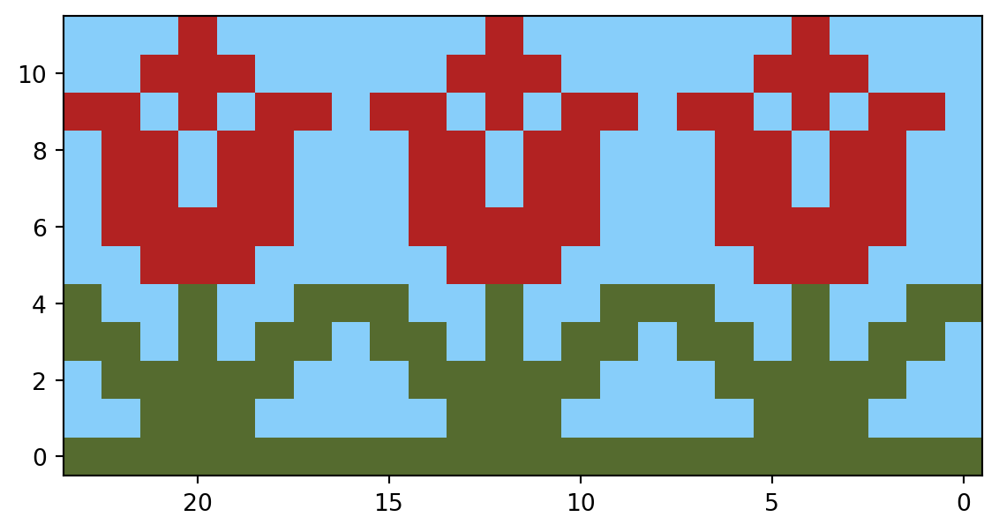
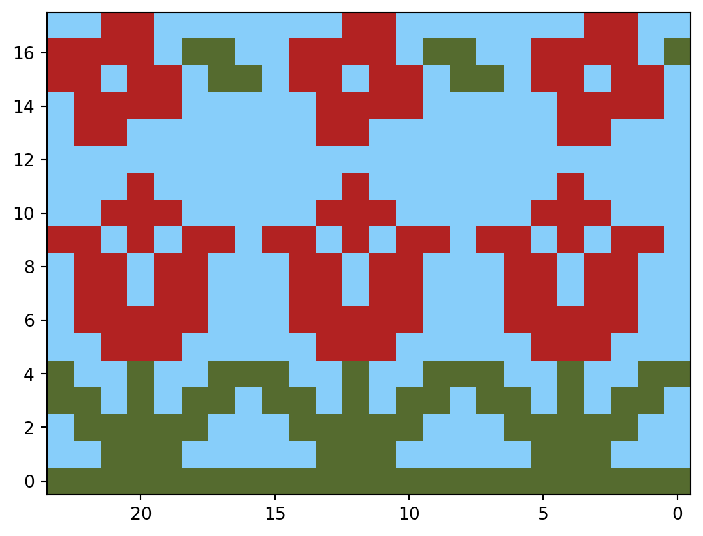

import math
import numpy as np
import pandas as pd
small_flower_array = np.array(
[
[0, 0, 1, 1, 0, 0, 0, 0],
[1, 1, 1, 1, 0, 2, 2, 0],
[1, 1, 0, 1, 1, 0, 2, 2],
[0, 1, 1, 1, 1, 0, 0, 0],
[0, 1, 1, 0, 0, 0, 0, 0],
]
)Simple Steps
1. create a numpy array of pixel values
Find a pattern you like and then create a numpy array of pixel values to represent the pattern, where 0s are the background and 1s are the color. For example, the following code creates a small flower pattern:
2. repeat the pixel values to create a pattern using tile function and convert to a dataframe
Now, you can repeat the pixel values to create a larger pattern using the np.tile() function. For example, to create a larger pattern with the small flower array, you can use the following code:
array_tile = np.tile(small_flower_array, (1, 3))
small_flower_df = pd.DataFrame(array_tile)- 1
-
Pass the small flower array to the
np.tile()function, Set the number of times to repeat the array vertically (1), Set the number of times to repeat the array horizontally (3).
3. plot the pattern using matplotlib
Finally, you can plot the pattern using Matplotlib. For example, to plot the small flower pattern, you can use the following code:
import matplotlib.pyplot as plt
fig, ax = plt.subplots()
ax.imshow(
small_flower_df,
)
plt.show(fig)
Tada! You have created a repeating pixel art pattern using Matplotlib and Numpy. But if you’re looking at this as a knitter, you may notice a few things off:
All the flowers are touching. In knitting, you’d want a bit of space between the flowers.
The colors are not what you’d expect. In knitting, you’d expect the background to be white and the pattern to be black, and the third color to be gray.
the Y-axis is inverted. This is because the origin (0, 0) is at the top left corner in Matplotlib, but in most things (including knitting), the origin is at the bottom left corner. To read the chart correctly, you’d want the y axis to be inverted so it reads from bottom to top.
Note
If you’re a right-handed knitter, you’d want the x axis to be inverted as well. This is because knitting charts are typically read from right to left.
- A knitting pattern is rarely just one row. You’d want to repeat the pattern multiple times to see how it looks over multiple rows, and add multiple patterns to spice up the design.
Let’s fix these issues in the next section.
Advanced Steps
Lets use another example to help us fix the issues mentioned above and explain other use cases. We will use a large flower pattern for this example.
large_flower_array = np.array(
[
[0, 0, 0, 1, 0, 0, 0, 0],
[0, 0, 1, 1, 1, 0, 0, 0],
[1, 1, 0, 1, 0, 1, 1, 0],
[0, 1, 1, 0, 1, 1, 0, 0],
[0, 1, 1, 0, 1, 1, 0, 0],
[0, 1, 1, 1, 1, 1, 0, 0],
[0, 0, 1, 1, 1, 0, 0, 0],
[2, 0, 0, 2, 0, 0, 2, 2],
[2, 2, 0, 2, 0, 2, 2, 0],
[0, 2, 2, 2, 2, 2, 0, 0],
[0, 0, 2, 2, 2, 0, 0, 0],
[2, 2, 2, 2, 2, 2, 2, 2],
]
)
array_tile = np.tile(large_flower_array, (1, 3))
large_flower_df = pd.DataFrame(array_tile)
fig, ax = plt.subplots()
ax.imshow(
large_flower_df,
)
plt.show(fig)
1. add space between the flowers and abstract the tiling function
To add space between the flowers, you can insert a row and column of zeros between each flower in the array. For example, to add space between the flowers in the small flower array, you can use the following code:
blank_column = np.zeros([len(small_flower_array), 1])
small_flower_array_spaced = np.append(small_flower_array, blank_column, 1) But this is a bit manual and not very reusable. Instead, you can create a function that takes an array and the desired length of the pattern and returns the array with the desired length, with a blank column between each repeat.
There are a few things to consider when creating this function: - You may not want to add a blank column between each repeat, like in the case of the large flower pattern - You may need to cut off the pattern to fit a desired length - You may want to flip the pattern horizontally to match the way knitting patterns are read
Here’s a function that does all of this:
def tile_array(array, desired_length, blank_between=True, cutoff=True):
if blank_between:
blank_column = np.zeros([len(array), 1])
array = np.append(array, blank_column, 1)
num_repeats = math.ceil(desired_length / array.shape[1])
array_tile = np.tile(array, (1, num_repeats))
if cutoff:
array_tile = array_tile[:, :desired_length]
array_return = np.fliplr(array_tile)
return array_return- 1
-
Add a blank column between each repeat if
blank_betweenis True - 2
-
Cut off the pattern to fit the desired length if
cutoffis True - 3
- Flip the pattern horizontally to match the way knitting patterns are read
2. create a color map for matplotlib
In an ideal world, you would be able to mark explicit colors to the number in the array. But in matplotlib, you can only pass a color map. This is basically just a gradient of colors that matplotlib will use to color the numbers in the array. Luckily, knitting patterns are typically only three colors: the background, the pattern, and a third color for contrast. So you can create a custom color map to match these colors fairly easily.
You can create your own color map using the ListedColormap function. You can pass a list of colors to the function, where the first color is the background color (0), the second color is the first color in the pattern (1), and the third color is the second color in the pattern (2). matplotlib colormap manipulation doc 🔗
import matplotlib.colors as mcolors
cmap_bw = mcolors.ListedColormap(["white", "gray", "black"])
cmap_rg = mcolors.ListedColormap(["lightskyblue", "firebrick", "darkolivegreen"])There are so many colors to choose from in matplotlib. So you can create your own color map to match the colors you want in your pattern. Have fun with it! matplotlib color maps 🔗
3. plot the pattern using matplotlib with the color map and inverted axes
Now you can plot the pattern using Matplotlib with the custom color map. For example, to plot the large flower pattern with the custom color map, you can use the following code:
large_flower_df = pd.DataFrame(
tile_array(
large_flower_array,
blank_between=False,
desired_length=24,
cutoff=True,
)
).iloc[::-1]
fig, ax = plt.subplots()
ax.imshow(
large_flower_df,
cmap=cmap_rg,
aspect="equal",
origin="lower",
)
ax.invert_xaxis()
plt.show(fig)- 1
- Flip the pattern vertically to match the way knitting patterns are read
- 2
- Invert the x-axis to match the way knitting patterns are read

4. add multiple patterns to spice up the design
You can add multiple patterns to spice up the design by combining multiple arrays. For example, to create a pattern with both the small and large flower patterns, you can use the following code:
def combine_patterns(patterns, include_blank=True):
if include_blank:
blank_row = pd.DataFrame([[0] * 24])
result = []
for e in patterns:
result.append(e)
result.append(blank_row)
result.pop()
return pd.concat(result[::-1], axis=0)
return pd.concat(patterns[::-1], axis=0)
pattern_length = 24
small_flower_df = pd.DataFrame(
tile_array(
small_flower_array,
blank_between=True,
desired_length=pattern_length,
cutoff=True,
)
).iloc[::-1]
large_flower_df = pd.DataFrame(
tile_array(
large_flower_array,
blank_between=False,
desired_length=pattern_length,
cutoff=True,
)
).iloc[::-1]
both_patterns = combine_patterns([small_flower_df, large_flower_df])
fig, ax = plt.subplots()
ax.imshow(
both_patterns,
cmap = cmap_rg,
aspect="equal",
origin="lower",
)
ax.invert_xaxis()
plt.show(fig)
Tada! You have created a repeating pixel art pattern for a Fair Isle pattern using Matplotlib and Numpy. You can now create your own custom patterns and color maps to design beautiful Fair Isle patterns for your knitting projects. Have fun knitting!
If you want to get the full code, you can find it on my GitHub repository. GitHub repository 🔗